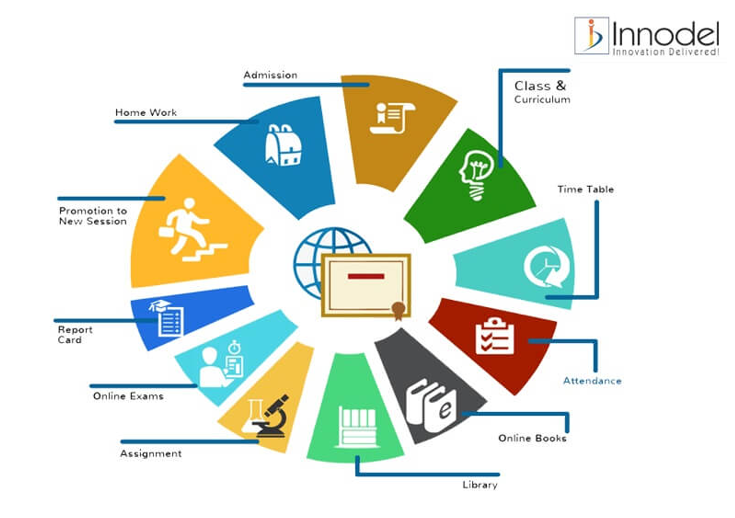
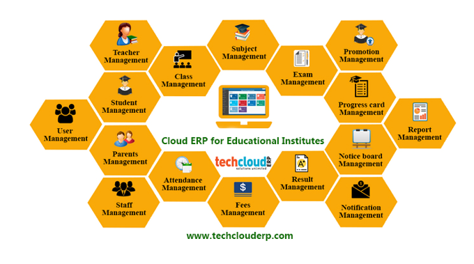
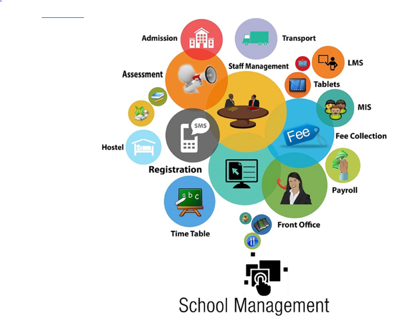

Education Sector
What is School Management Software?
The best ERP software for a school is a comprehensive and an all-in-one solution for the school administration, which include principals, teachers and the school management. It is also useful for parents as well as students for keeping themselves aware of important updates and information.
By using school ERP modules, teachers can focus on improving the learning outcomes of students, parents can keep a vigil on the performance on their wards and school principals can easily manage all important tasks within the school premises.

How does School ERP Modules Benefit Teachers, Students and Parents?
ERP software for school management is an intensive solution that can be used to bring teachers, students and parents on the same page. Following are the ways in which a free ERP software can turn out to be beneficial.
• For Teachers
A school ERP software helps in minimizing the burden of administrative tasks on teachers, which leaves them with ample of time to focus on the educational needs of the pupils.
With education ERP software, teachers can effectively communicate with individual students or the whole class. It also allows you to upload assignments, update report cards and much more.
• For Students
A school ERP system streamlines the learning process for a student. It organizes their study in a well-defined manner and lets students connect with different teachers for doubt solving sessions.
• For Parents
An efficient school management ERP system is perhaps most useful for parents. They can receive regular updates about their child’s learning level, their progress report, and the exam results.
They can also maintain effective communication with different teachers to stay updated about their ward’s curricular or co-curricular progress.


Best Education ERP Software Providers to Consider
Camu is an enterprise-level campus management solution developed with open-source technologies for web and mobile platforms that target specific roles in a campus environment. The solution offers various solutions for its clients, including a student information system (SIS), learning management, analytics, mobile applications, virtual classroom functionalities, outcome-based education tools, and more. Camu is one of the products offered by Octoze Technologies, an India-based company offering various business solutions for education.
Ellucian develops software solutions and services for higher education institutions like colleges and universities worldwide. The company’s education ERP solution, Banner, is available in SaaS, private cloud, and on-premise options. It offers users an intuitive UI, end-to-end functionality, flexible cloud technologies, streamlined implementation services, and integrations with Ellucian and non-Ellucian solutions alike. Ellucian’s Banner suite also includes solutions for finance, students, financial aid, and human resources
ERPNext provides an open-source DIY ERP solution for educational institutions and schools of all sizes. The platform comes equipped with student information management, employee management, learning management, expense management, and customizable functionalities to help institutes keep their data in a single, integrated system. Other features include interactive portals, document storage, and tools to help instructors and students manage courses, attendance, and additional information.
Fedana's School ERP Software is designed to help educational institutions manage their daily academic and administrative activities from a unified platform. It includes 22 core modules with features for admission management, messaging systems, HR, student management, SMS integrations, timetable management, student IDs, mobile learning, school calendar, and dashboards for teachers, students, parents, and other staff. Fedena offers three pricing tiers so an institution can equip its team with the tools and software it needs.
Focus Softnet is a global software provider that works with clients across industries by providing ERP, HCM, and CRM solutions. Its education ERP solution consists of a suite of integrated modules developed to enable users to increase productivity, streamline processes, automate workloads, store records, and meet business needs. These custom ERP modules include business intelligence, financial management, human resource, inventory management, CRM, contract management, and more.
Jenzabar offers scalable technology software and services exclusively tailored to the needs of higher education intuitions. The company uses an integrated database and mobile-first approach to connect students and faculty to course, registration, student life, and administration resources. Alongside its cloud ERP services, Jenzabar also offers student information systems (SIS), financial aid, analytics, recruitment, eLearning, and other products that higher education institutions could benefit from.
MyClassCampus is a global mobile app and web-based ERP platform provider that works with schools, colleges, and other educational organizations. The company’s ERP comes equipped to help users stream communication and resource management with 40 modules that cover financial, inventory, inquiry, transport, reports, human resource, and other education institutes’ needs. Other products available through MyClassCampus include a student information system, coaching class software, a learning management system, and more.
NetSuite's cloud-based ERP platform can help educational organizations break down siloed data, reduce costs, optimize operational processes, and free up resources. Its ERP includes financial management, constituent relationship management, integrated budgeting tools, forecasting, fundraising, business intelligence, online commerce, spend management, and global business management. NetSuite also offers various educational services to help institutions extract the most value from their ERP software.

Oracle Education and Research is a cloud-based ERP solution with functionalities geared toward higher education, primary and secondary education, and research institutions. These solutions are designed to help these institutions optimize campus operations, customize the student experience, improve financial insights, manage sensitive data, streamline complex research projects, analyze large data sets, and predict student, faculty, and campus needs. Users can also expand their education ERP capabilities by integrating with any of Oracle’s other products.

Tyler Technologies provides various software solutions designed to meet the needs of companies that serve the public, including educational institutions. The company’s school ERP equips users with the financial management, facility management, and human capital management tools they need to make strategic decisions about their school. These features can also help schools plan for the future, operate within pre-defined budgets, achieve organizational goals, manage employees, optimize student achievements, and more.

Unit 4 products include fully integrated ERP, HCM, and FP&A solutions that mid-sized higher education institutions can utilize. Its educational ERP offering focuses on the “people experience” and features to help campuses grow and scale. Unit4’s ERP features include financial management, operational reporting, procurement management, human resources, payroll, and project management. These tools will help users gain further clarity into campus resources and maintain stability amidst innovation and change.

Work Day Student is an education management system designed to unite students, faculty, and campus leaders across an institution. Its unified enterprise management solution can help educational organizations with admissions, financial aid, advising, student experiences, and curriculum management. It can also equip them with new insights into the institution with HCM, financial, and student systems data. Other features include end-user reports, mobile application capabilities, cloud delivery, and more.